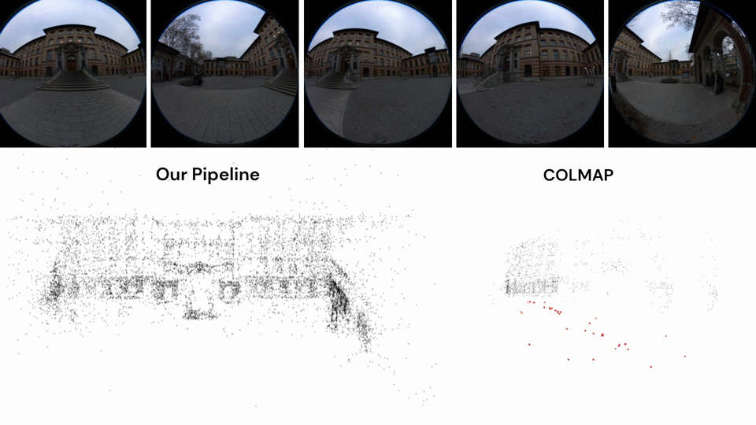
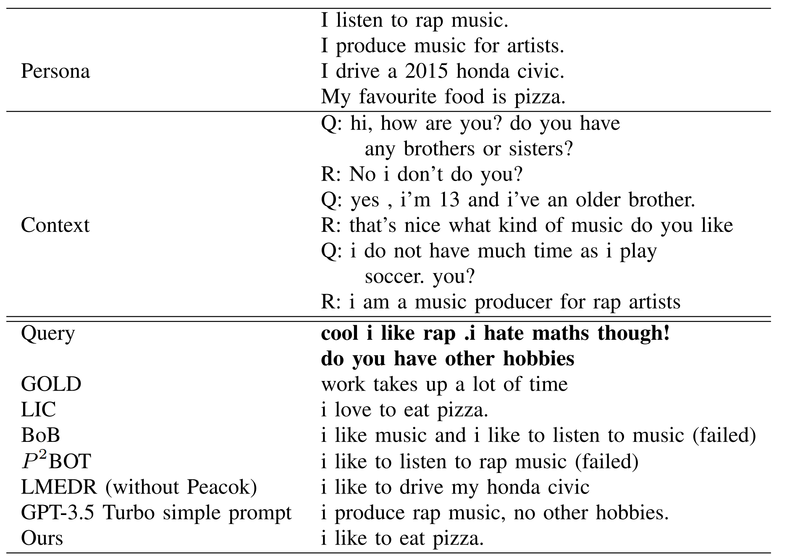
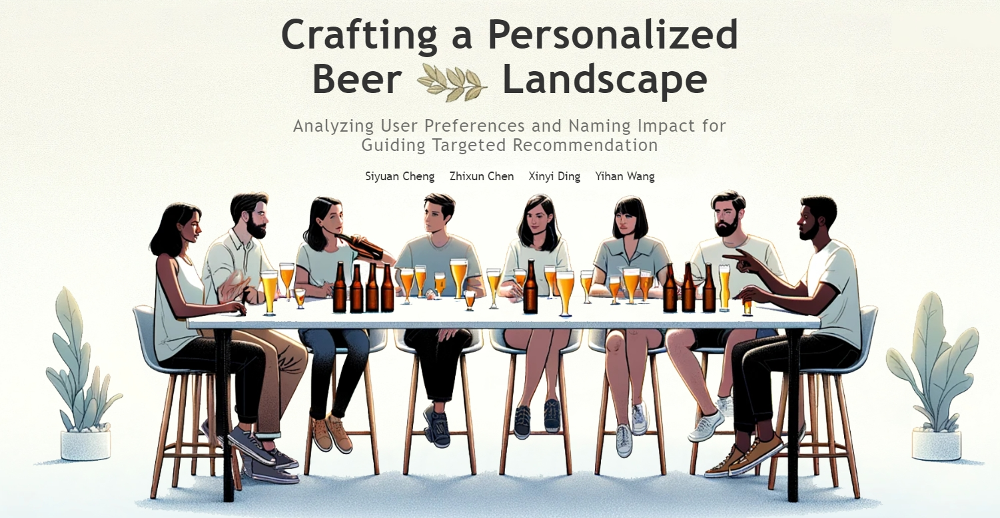
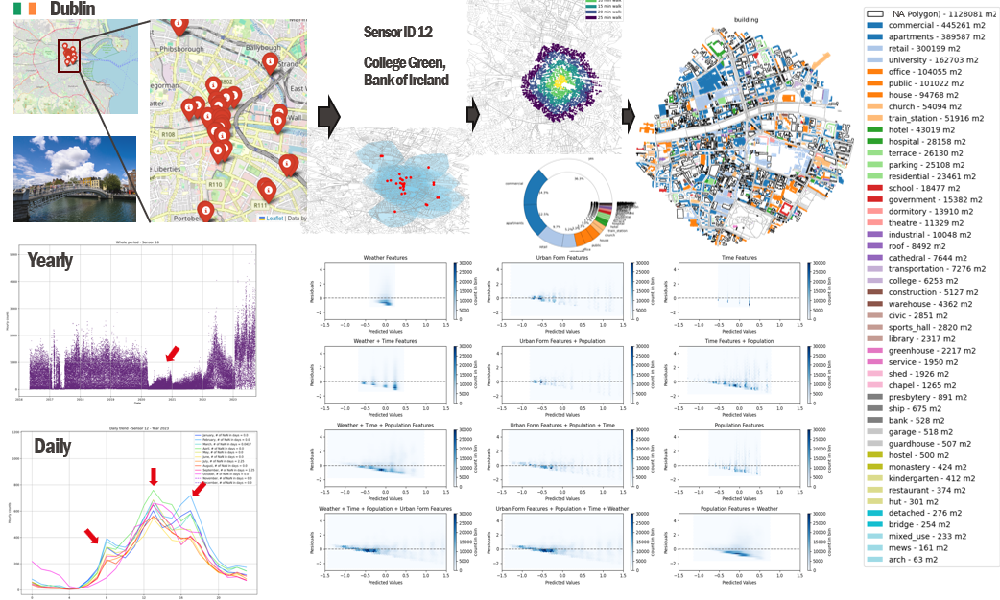
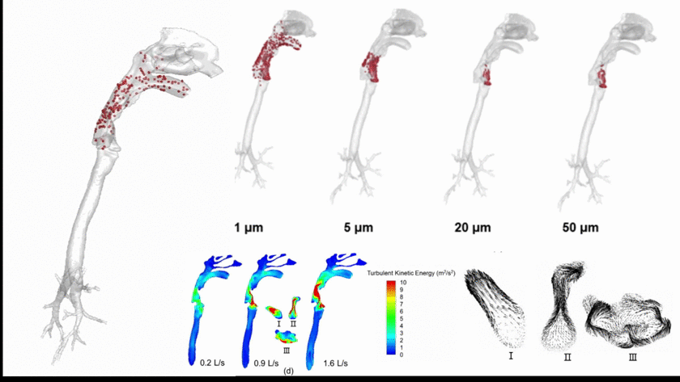

Zewei Zhang
A master's student at EPFL, working on robot control.

I am a Master’s student in the Department of Mechanical Engineering at Ecole Polytechnique Fédérale de Lausanne. During my master s study, I have the privilege of conducting the research projects, in BioRob at EPFL advised by Prof. Auke Jan Ispeert and in RSL at ETH Zurich advised by Prof. Marco Hutter. My research interests lie in the field of robot learning and quadrupedal locomotion with Reinforcement Learning and Bio-inspired Control. Prior to joining EPFL, I completed my bachelor’s degree at Waseda University in Tokyo, Japan.
Research Projects
|  |
A parametrical distortion free Structure-from-Motion (SfM) pipeline for 3D reconstruction and camera localization, featuring robustness to radial distortions. |
 |
A novel scheme for keypoint-based lane detection using pose estimation, using composite fields to jointly estimate the keypoint locations and associations. This method achieves on par performance with state-of-the-art frameworks on public benchmarks while being relatively simple. |
Course Projects
|  |
A chatbot model generating dialogue responses that possess both persona consistency and contextual coherence. |
Data Analysis and Visualization
|  |
A data story was created to analyze user preferences and naming impact using review datasets consists of both categorical ratings and textual reviews. |
|  |
An analysis about human's interactions with urban forms based on pedestrian count data, with an aim to understand what kind of urban design is considered benefiting internal individual residences and cohesion of society. |
Previous Publications
|  |
Investigation on the importance of airborne transmission in the spread of respiratory infectious diseases using computational fluid dynamics based on a realistic human airway model. |